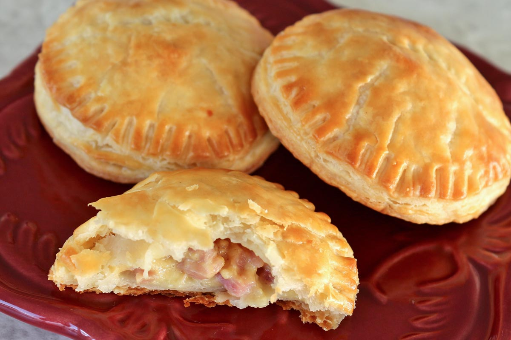

Empanadas

An empanada is a pastry, akin to a turnover, popular in Latin America, that originated in Spain.
The pastry is usually filled with a cheese and meat and wrapped with a flaky dough and fried or baked.
Ingredients
- Frozen Goya Empanada
- Tropicana White Cheese
- 1/2 of Honey Ham
- Avacado Oil
- Salt
Steps:
- Step 1:Defrosrt frozen empanada.
- Step 2:Dice cheese and ham into cubes.
- Step 3:Pre-heat pan filled with a good amount of oil to deep fry the empanada.
- Step 4:Put the dice ham and cheese onto the empanada disc.
- Step 5:After enclosing the empanadas, deep fry them into the preheated pan.
- Step 6:Allow empanadas to dry up. Toss a pinch a salt ontop of the empanadas. Enjoy.